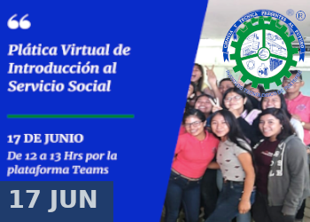

Tuxtepec, Oax., 21 de Febrero de 2020. TecNM/DCD.
El Tecnológico Nacional de México Campus Tuxtepec realizó promoción de carreras en el CONALEP # 157.
El día viernes personal del Tecnológico Nacional de México Campus Tuxtepec acudió a realizar promoción de carreras coordinados por el Departamento de Comunicación y Difusión.
Al evento acudieron docentes representando a las carreras de Ingeniería Informática, Sistemas Computacionales, Bioquímica, Electromecánica, Gestión Empresarial, Licenciatura en Administración y Contador Público.

Tuxtepec, Oax., 17 de Junio de 2021. TecNM/DCD.
El dia 17 de Junio se llevó a cabo la Reunión Virtual sobre temas de Introdución a estudiantes del TecNM campus Tuxtepec que están por iniciar trámites del Servicio Social.
La reunión promovida por el Departamento de Gestión Tecnológica y Vinculación se realizó en la plataforma de Microsoft Teams donde se expusieron dudas sobre el trámite y
documentación a presentar por parte de los estudiantes.
Ponemos a su disposición la grabación de la charla desde nuestro canal de Youtube
#TodosSomosTecnm #OrgulloTecnm #ITTuxtepec #SoyOrgullosamenteTec
Tuxtepec, Oax., 21 de Junio de 2021. TecNM/DCD.
Este día se dió a conocer por medio de una reunión virtual por medio de la plataforma Teams del Tecnológico Nacional de México Campus Tuxtepec, el lanzamiento del Proyecto "La Ruta del Emprendedor".
El departamento de Gestión Tecnológica y Vinculación fué el encargado de darlo a conocer como parte de la labores para generar un Ecosistema Emprendedor dentro del Instituto.
La Ruta del Emprendedor, tiene por objetivo que los estudiantes que se inscriban a cursarla de manera que tengan la oportunidad de DESCUBRIR, CREAR Y EMPRENDER una idea de negocio, promoviendo el desarrollo de los futuros Lideres Emprendedores agentes de cambio en toda la Región.
#TodosSomosTecnm #OrgulloTecnm #ITTuxtepec #SoyOrgullosamenteTec
atte/dcyd
Tuxtepec, Oax., 16 de Junio de 2021. TecNM/DCD.
Concurso de Carteles
La Subdirección de Planeación y Vinculación, a través del Centro de Información, quien coordina la actividad complementaría de “Inclusión para la convivencia”, y dando seguimiento a la rúbrica donde se presenta la actividad “Elaboración de un cartel”, cuyo objetivo es que los participantes apliquen la información adquirida durante el curso respecto a la sensibilización y buenas prácticas mediante actividades lúdico-académicas para favorecer la convivencia con la diversidad de personas; por lo que se da a conocer la siguiente dinámica en la que podrá participar la comunidad tecnológica y el público en general.
De los carteles publicados en nuestra cuenta oficial de Facebook, el publico eligió el que más le gustó y el que mas se ajustó al tema “Inclusión para de la convivencia”.
El Cartel GANADOR fue Realizado por: Dora Lizbeth Feria Lorenzo
Felicidamos también a los PARTICIPANTES Miguel Alexis Andrade Rico, Ricardo de Jesús Castro Hernández y Luis Enrique Hernández Aguayo
El Cartel Ganador fué el que obtuvo un mayor número de likes y que publicamos a continuación.
#TodosSomosTecnm #OrgulloTecnm #ITTuxtepec #SoyOrgullosamenteTec #+Lectura
Tuxtepec, Oax., 24 de Feberero de 2020. TecNM/DCD.
La secetaria de Edicación Pública a través de la Coordinación Nacional de Becas para el Bienestar Benito Juárez (CNBBBJ), con base en el decreto por el que se crea la CNBBBJ en el DOF el 31 de Mayo de 2019.
Y en el acuerdo Número 30/12/19 por el que se emiten las Reglas de Operación para el Programa de Becas Elisa Acuña para el ejercicio fiscal 2020. publicado en el DOF el 29 de Diciembre del 2019.
Convoca a los alumnos de alguna Institución Pública de Educación Superior del país (excepto UAM, UPN, ENAH, IPN y UNAM) a postularse para obtener la Beca Federal para Apoyo a la Manutención con el objeto de fomantar la permanencia y la continuación de sus estudios.
Las bases son:
Tuxtepec, Oax., 4 de Marzo de 2020. TecNM/DCD.
El día de ayer 03 de marzo del 2020 en la Sala Audiovisual de nuestro Instituto, a través del Depto. De Gestión Tecnológica y Vinculación, se impartió la ponencia "Signos Distintivos".
La ponencia estuvo a cargo del Lic. Gustavo Iván Martínez Vázquez del Instituto Mexicano de la Propiedad Intelectual; entre los asistentes se encontraban docentes y estudiantes que fueron invitados oportunamente a este evento.
Con estas actividades de capacitación, promovidas por La Administración del Instituto se ve favorecida la Comunidad Tecnológica interesada en emprender y hacer el registro oficial de marcas y patentes.
 Tuxtepec, Oax., 5 de Marzo de 2020. TecNM/DCD.
EL TECNOLÓGICO NACIONAL DE MÉXICO Y EL INSTITUTO TECNOLÓGICO DE TUXTEPEC, A TRAVÉS DEL DEPARTAMENTO DE DESARROLLO ACADÉMICO:
Tuxtepec, Oax., 5 de Marzo de 2020. TecNM/DCD.
EL TECNOLÓGICO NACIONAL DE MÉXICO Y EL INSTITUTO TECNOLÓGICO DE TUXTEPEC, A TRAVÉS DEL DEPARTAMENTO DE DESARROLLO ACADÉMICO:
C O N V O C A N
A todos los estudiantes de OCTAVO SEMESTRE EN ADELANTE Y EGRESADOS que se integren para CONTINUAR O INICIAR el DIPLOMADO DE INGLÉS en la modalidad de CURSO INTENSIVO, que se llevará a cabo del 15 DE MARZO AL
14 DE JUNIO DEL 2020 con una duración de TRES DOMINGOS POR MÓDULO DE 8 HORAS CADA SESIÓN , bajo las siguientes bases:
Tuxtepec, Oax., 12 de Marzo de 2020. TecNM/DCD.
EL TECNOLÓGICO NACIONAL DE MÉXICO Campus TUXTEPEC partició el día de hoy en la Cuarta Feria de Orientación Vocacional que se realizó en el CBTis 107.
Maestros, Alumnos y Personal Administrativo se dieron cita en la cancha del CBTis 107 de Tuxtepec, para participar en las actividades que se realizan dentro de la Feria Vocacional
del Centro de Bachilletaro Técnico Industrial 107, las cuales consistieron en una serie de Conferencias y la presentación de un stand con proyectos de las diversas especialidades
que el Instituto Tecnológico de Tuxtepec ofrece como oferta educativa, con el fin de que los alumnos próximos a egresar seleccionen la carrera que sea mas de su agrado preguntando
a los docentes que se encontraban en el Stand o incluso a los mismos estudiantes que acompañaban a los docentes para mostrar sus proyectos.
Tuxtepec, Oax., 3 y 4 de Junio de 2021. TecNM/DCD.
Los días 3 y 4 de junio del presente, el TecNM campus Tuxtepec, comprometido con sus estudiantes y cuidando todas las medidas
de higiene y sanidad, realizó la Ceremonia de Graduación con la modalidad Presencial Restringida, en nueve bloques, donde
egresados de las carreras de Ing. Bioquímica, Ing. Electromecánica, Ing. Informática, Ing. En Sistemas Computacionales, Ing.
Civil, Ing. En Gestión Empresarial, Contador Público y Lic. En Administración vieron culminada con éxito su carrera
profesional; así como los egresados de la maestría en Ciencias en Alimentos y la maestría en Administración quienes
obtuvieron el grado de Maestro.
Agradecemos la suma de esfuerzos y voluntades por parte de Egresados, Padres de Familia que son parte fundamental de este
logro, así como al personal del Instituto que colaboró para que este evento se realizara de forma segura y con todas las
medidas pertinentes ante la emergencia sanitaria de la que estamos saliendo avante.
Les dejamos un recuerdo de la Ceremonia de Graduación Presencial Restringida, Generación 2016-2021
Tuxtepec, Oax., 14 de Junio de 2021. TecNM/DCD.
Enrique Cruz Octaviano, egresado de Ingeniería Electromecánica del #TecNM campus Tuxtepec, fue reconocido por la Asociación Nacional de Facultades y Escuelas de Ingeniería (ANFEI), en su ceremonia virtual “Mejores Egresados de Ingeniería del País en el Año 2020”
Con el objetivo de reconocer a los jóvenes que han destacado por su esfuerzo, dedicación, y buenos resultados durante su desempeño como estudiante de ingeniería.
La ANFEI distingue a ex alumno del Tecnológico Nacional de México por sus méritos académicos y su desarrollo profesional.
Por su esfuerzo, dedicación y buenos resultados como estudiante de Ingeniería, Enrique Cruz Octaviano fue reconocido por la Asociación Nacional de Facultades y Escuelas de Ingeniería (ANFEI), como el mejor egresado del Campus Tuxtepec en el año 2020.La ceremonia donde se reconocieron a los Mejores Egresados de Ingeniería del país, se realizó en el marco de la XLVIII Conferencia Nacional de la ANFEI, realizada de manera virtual desde el ITESM Campus Guadalajara, en Zapopan, Jalisco.
Enrique Cruz no sólo ha destacado por su excelencia académica sino también por su activa participación durante su formación en el Campus Tuxtepec, en la carrera de Ingeniería Electromecánica. Al respecto, colaboró en el diseño, construcción y presentación de un vehículo “Gokart”, como proyecto final de la materia de Diseño de elementos de Máquina.
Asimismo, elaboró el artículo técnico científico titulado “Evaluación de la reducción del espesor para optimización de placas de bloqueo”, presentado en el XVII Congreso Nacional de Ingenierías Electromecánicas y de Sistemas, en noviembre 2018, en la Ciudad de México. También realizó el artículo técnico científico titulado “Evaluación del ahorro de energía eléctrica residencial mediante una racionalización de consumo basada en tarifas eléctricas”, como proyecto final de la materia Taller de Elaboración de artículos técnico-científicos.
Además, el joven oaxaqueño desarrolló el proyecto “Análisis del factor de potencia en el proceso de soldadura por arco eléctrico y el diseño de un nuevo dispositivo para su corrección”, en el transcurso de las residencias profesionales. En 2016, participó en la conferencia "Producción sustentable de energía eléctrica por medio de un biogenerador magnético", en el marco de la semana Nacional de Ciencia y Tecnología, en Tuxtepec, Oaxaca.
El premio fue entregado en la Conferencia Nacional de la ANFEI, con el objetivo de estimular el esfuerzo de jóvenes mexicanos talentosos, quienes a través de los resultados de sus estudios están garantizando que serán profesionistas con una magnífica preparación académica y con una formación humanística y ética que se acompaña de la calidad en sus estudios.
La ANFEI es una asociación civil que agrupa a más de 200 institutos, facultades y escuelas de ingeniería en todo el país.


Dirección
Calzada Dr. Víctor Bravo Ahuja Num. 561, Col. Predio el Paraíso, C.P. 68350, San Juan Bautista Tuxtepec,Oaxaca
Contacto
Email: cyd_tuxtepec@tecnm.mx
Teléfono: 287 8751880 Ext. 114
Enlaces
Portal de Obligaciones de Transparencia
INAI
Buzón de Sugerencias
Número de Visitas:
© Copyright 2019 TecNM - Todos los Derechos Reservados
Última actualización: 18/10/2019